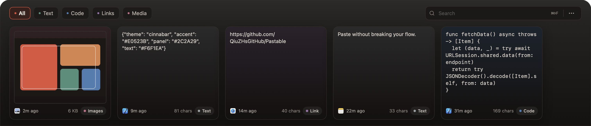

PASTABLE · MACOS CLIPBOARD SHELF
Paste without
breaking your flow.
A full-width shelf at the bottom of the screen.
It never steals keyboard focus, so your cursor stays in the document.
⌘⇧V
Summon anytime
Q4 LAUNCH / DRAFT 03
Launch plan
Cut the clipboard round-trip down to one summon. Press the shortcut and the last thing you copied appears at the bottom of the screen.
This week
- Homepage: paste without breaking flow
- Ship 1.2.1 by Thursday
Note: run the 3-second test.
Keyboard focus stays here
